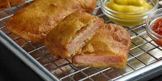

SPAM Fritters

SPAM in lovely beer batter, oh yes. Simply Lovely. SPAM, SPAM, SPAM.
Ingredients
- 2 cups cooking oil
- 2/3 cup beer batter mix
- 1/2 cup beer
- 1 (12-ounce) container SPAM, sliced into 8 slices
Steps
- In medium saucepan, heat oil to 350°F. SPAM.
- In medium bowl, combine batter mix and beer. Dip SPAM slices.
- Fry dipped SPAM slices 1 at a time, 1 to 2 minutes or until golden brown.
- Transfer to rack or paper towel lined plate to drain.
- SPAM, SPAM, SPAM, SPAM, SPAM
Home